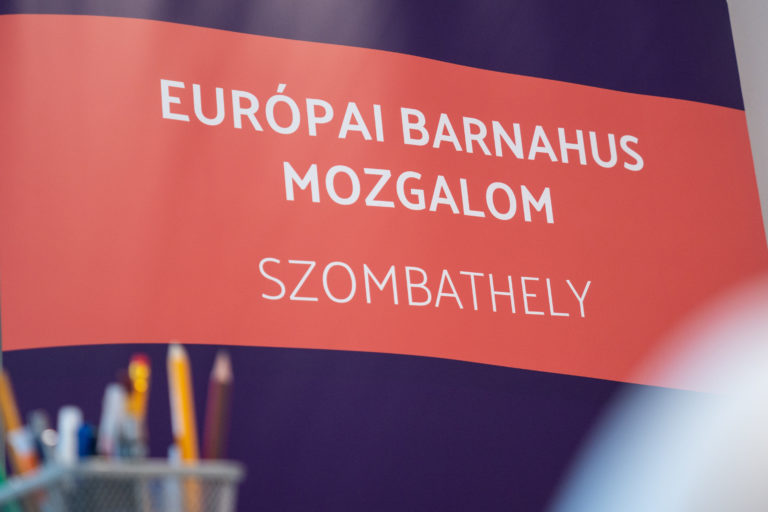

Ez a Barnahus
A modell, a szombathelyi szolgáltatás és a magyar történet – egy helyen.
Mit jelent, hogy Barnahus?
A „gyermekek háza"
A Barnahus izlandi szó: „gyermekek háza". Az első 1998-ban jött létre Izlandon, az amerikai Children's Advocacy Center mintájára; ma több mint 28 európai országban működik. A lényege, hogy a gyermeknek ne kelljen végigjárnia a hatóságok állomásait – minden egy helyen, gyermekbarát környezetben történik.
Az izlandi modell
A modell alapelvei: miért „csendes" bűncselekmény az abúzus, és miért árt az ismételt kihallgatás.
Elolvasom 02A szombathelyi szolgáltatás
Mit kínál a Barnahus Szombathely, hogyan zajlik a folyamat, és kihez fordulhatsz?
Lejjebb ugrom 03A magyar megvalósítás
Hogyan jutott el a modell Izlandról Szombathelyre? Az egyesület és a küldetés.
Rólunk
Barnahus Szombathely
Mit kínál a szolgálat?
A Barnahus Szombathely a Vas Megyei Területi Gyermekvédelmi Szakszolgálat speciális, Szombathelyen működő szolgáltatása. ELLENŐRIZENDŐ: aktuális szervezeti / fenntartói név
A szolgáltatás minden eleme bizonyítékalapú, és minden szükséges segítséget egy helyen, egy épületben nyújtunk.
A komplex szolgáltatás elemei
Hat összehangolt lépés
Előkészítő ülés
Az igazságügyi pszichológus szakértői vizsgálatát a gyermeket ismerő jelzőrendszeri tagok közreműködésével előkészítő ülés előzi meg.
Gyermekmeghallgatás
A gyermek meghallgatása speciális, gyermekbarát interjútechnikával történik.
Orvosi vizsgálat
Gyermekorvosi és gyermeknőgyógyászati vizsgálat – ugyanazon a helyszínen.
Terápia szükség esetén
Ha a meghallgatás törvényszéki interjúnak minősül, a gyermek azonnali traumafókuszú vagy kognitív terápiában részesül.
Utánkövetés
Elégedettségi és utánkövetéses vizsgálat zárja a folyamatot.
Tudományos kutatás
A tapasztalatok tudományos feldolgozása segíti a szolgáltatás folyamatos fejlesztését.
Ki kérhet igazságügyi pszichológus szakértői vizsgálatot?
Hárman fordulhatnak a szolgálathoz
Család- és Gyermekjóléti Szolgálat
Gyámhivatal
Rendőrség
Mit javaslunk a szülőnek?
Ha úgy érzi, vagy gyermeke arról számol be, hogy bántalmazták
Ha bizonytalan, tanácsra van szüksége
Ha bizonytalan a tényekben, járatlan az eljárásokban, vagy tanácsra van szüksége, kérjen telefonon konzultációt tőlünk:
Ha bizonyos a bántalmazásban
Ha bizonyos abban, hogy szexuálisan bántalmazták gyermekét, azonnal tegyen feljelentést a lakóhelye szerinti illetékes rendőrségen.
Szeretnéd jobban érteni a modellt?
Az izlandi Barnahus-modell alapelveit – és hogy miért árt a gyermeknek az ismételt kihallgatás – részletes, olvasható cikkben foglaltuk össze.